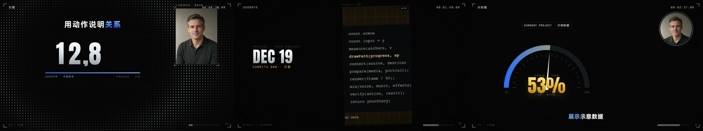已下载个人包 · 仅本机使用酷炫科技风金属立体字、光效与空间动效；中英横屏、中文竖屏，新增英文竖屏基础表达 B1–B4，支持人脸居中与圆形署名。1920 × 1080 · 60.0 fpszh · 18.1 MB · ff378f03dd官网详情 查看 Demo选用并显示制作指令
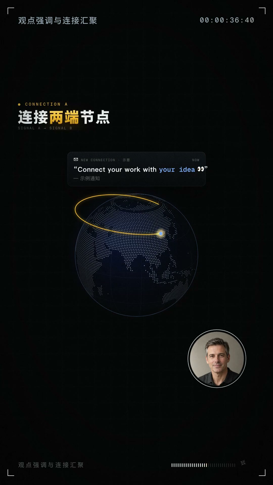已下载个人包 · 仅本机使用酷炫科技风 · 中文竖屏金属立体字、光效与空间动效；中英横屏、中文竖屏，新增英文竖屏基础表达 B1–B4，支持人脸居中与圆形署名。1080 × 1920 · 60.0 fpszh · 18.1 MB · ff378f03dd官网详情 查看 Demo选用并显示制作指令
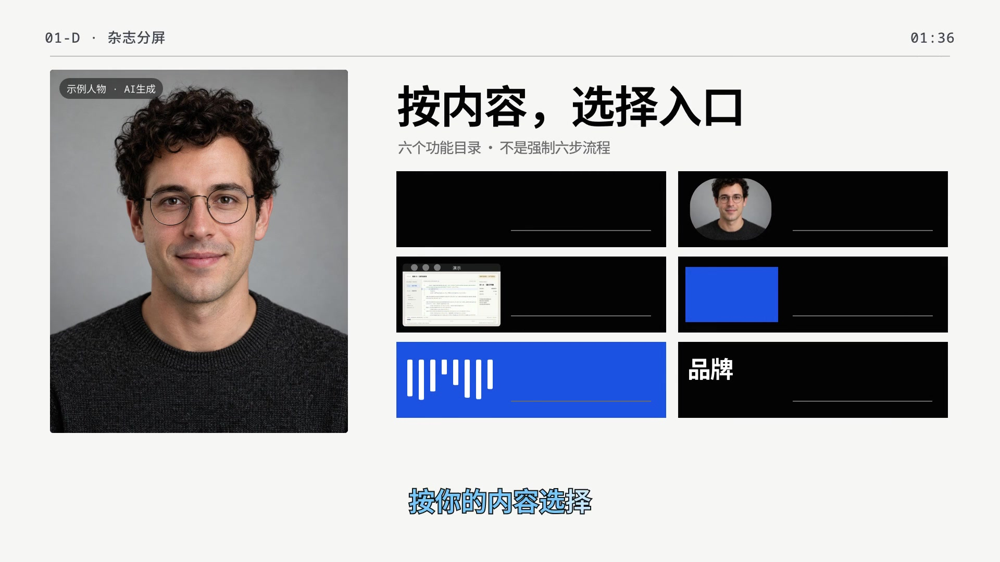已下载个人包 · 仅本机使用现代图文 · 口播讲解用现代图文版式、文字强调和信息拆解配合口播，适合观点、证据与步骤讲解。1920 × 1080 · 60.0 fpszh · 26.3 MB · 120daf917d官网详情 查看 Demo选用并显示制作指令
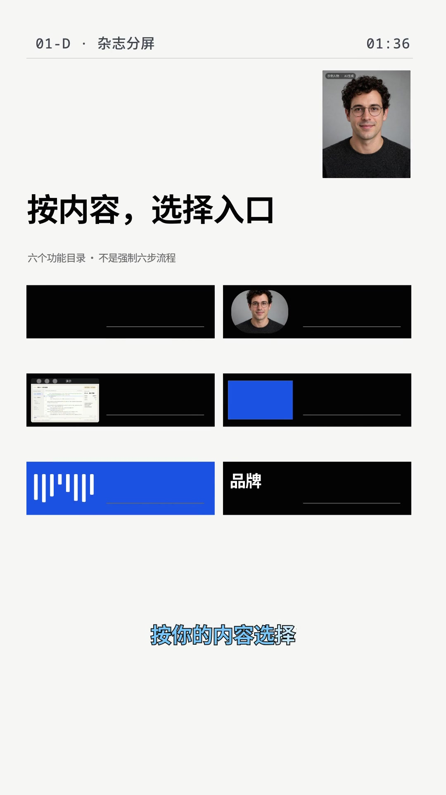已下载个人包 · 仅本机使用现代图文 · 口播讲解 · 竖屏用现代图文版式、文字强调和信息拆解配合口播，适合观点、证据与步骤讲解。1080 × 1920 · 60.0 fpszh · 26.3 MB · d6a3671b1f官网详情 查看 Demo选用并显示制作指令
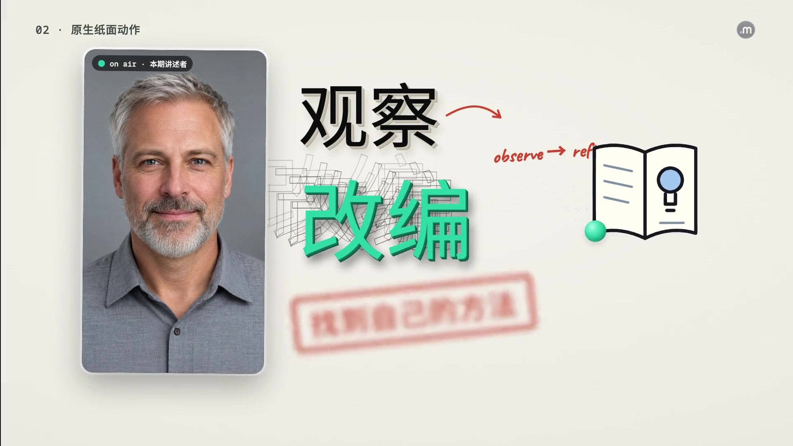已下载个人包 · 仅本机使用纸面透视 · 口播讲解用纸面透视、卡片层次和图文关系配合口播，适合方法拆解与结构化知识。1920 × 1080 · 60.0 fpszh · 27.2 MB · 4cd9c06952官网详情 查看 Demo选用并显示制作指令
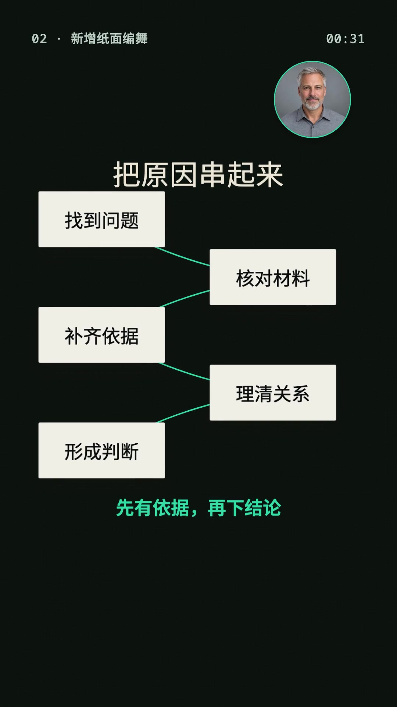已下载个人包 · 仅本机使用纸面透视 · 口播讲解 · 竖屏用纸面透视、卡片层次和图文关系配合口播，适合方法拆解与结构化知识。1080 × 1920 · 60.0 fpszh · 27.8 MB · 91df988808官网详情 查看 Demo选用并显示制作指令
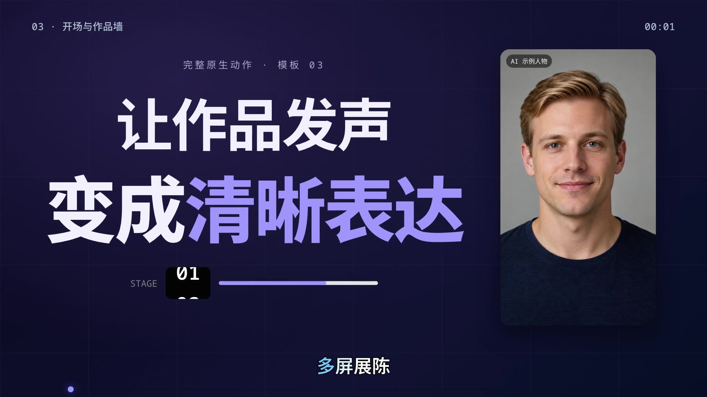已下载个人包 · 仅本机使用深色立体 · 多屏展陈用深色立体舞台、多屏和空间层次展示口播内容，适合产品、案例与媒体素材讲解。1920 × 1080 · 60.0 fpszh · 25.5 MB · 93586f6993官网详情 查看 Demo选用并显示制作指令
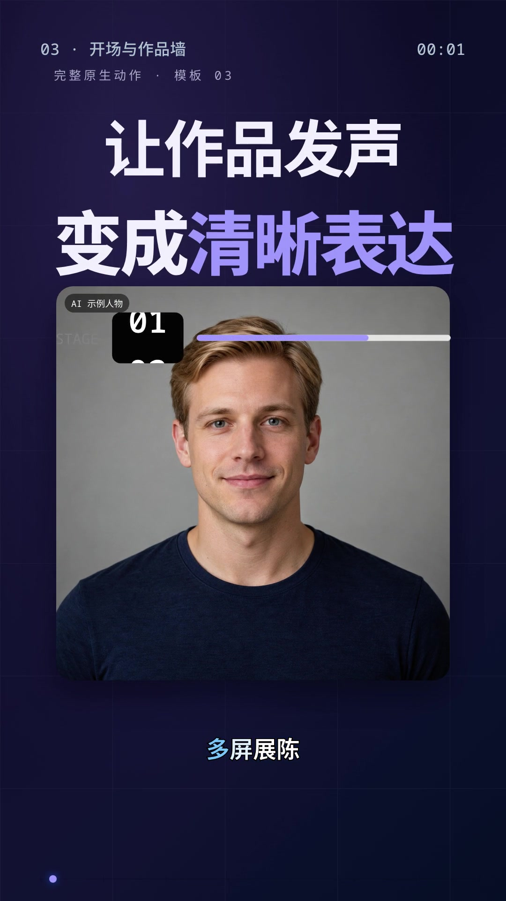已下载个人包 · 仅本机使用深色立体 · 多屏展陈 · 竖屏用深色立体舞台、多屏和空间层次展示口播内容，适合产品、案例与媒体素材讲解。1080 × 1920 · 60.0 fpszh · 25.5 MB · 5ccc95a719官网详情 查看 Demo选用并显示制作指令
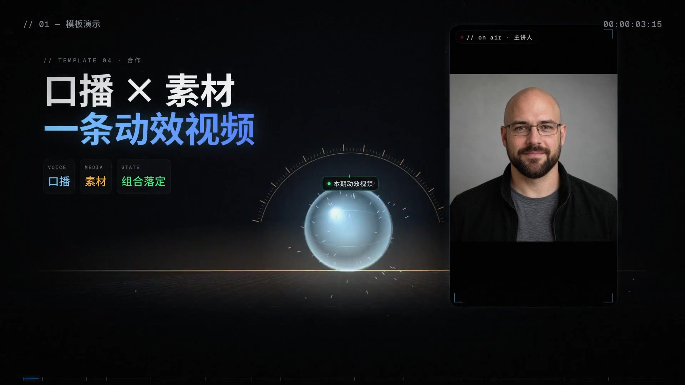已下载个人包 · 仅本机使用科技控制台 · 口播讲解用科技控制台、紫色玻璃质感与动态信息组件配合口播，适合技术与数据说明。1920 × 1080 · 60.0 fpszh · 32.0 MB · 8bad4ab039官网详情 查看 Demo选用并显示制作指令
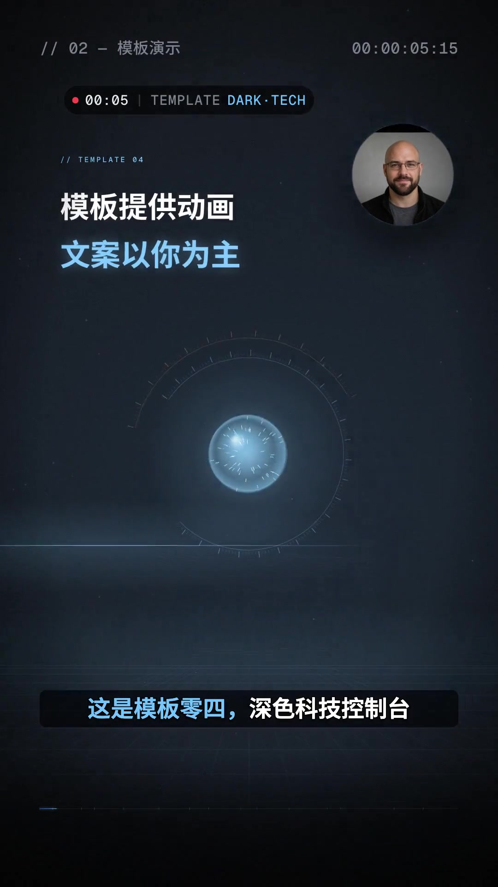已下载个人包 · 仅本机使用科技控制台 · 口播讲解 · 竖屏用科技控制台、紫色玻璃质感与动态信息组件配合口播，适合技术与数据说明。1080 × 1920 · 60.0 fpszh · 32.0 MB · 19dfe5e989官网详情 查看 Demo选用并显示制作指令
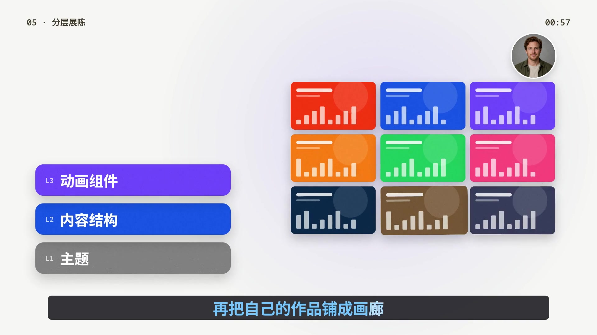已下载个人包 · 仅本机使用鲜色角色 · 叙事讲解用鲜明配色、角色素材与叙事动效配合口播，适合故事、观点和情境解释。1920 × 1080 · 60.0 fpszh · 37.0 MB · b1b712fc21官网详情 查看 Demo选用并显示制作指令
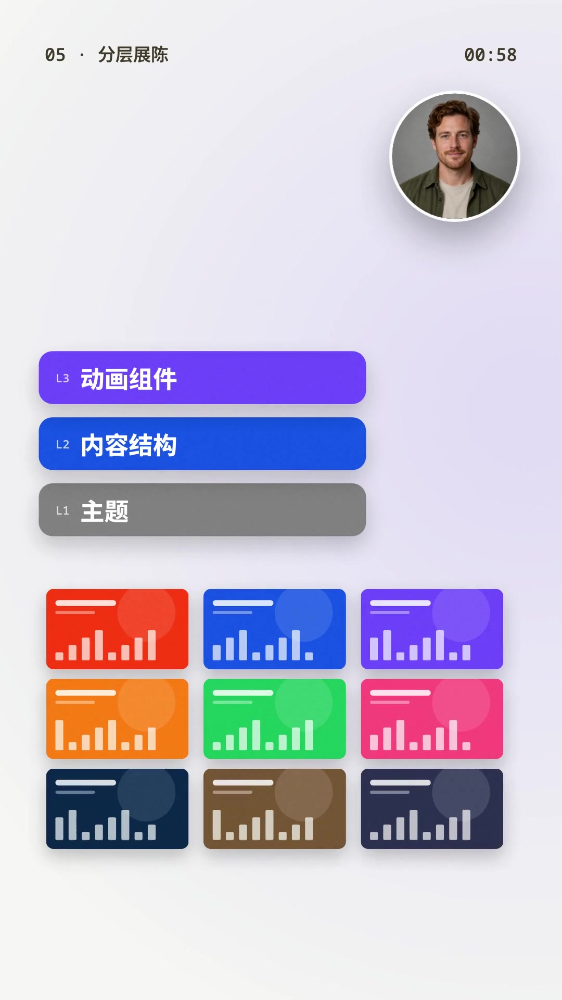已下载个人包 · 仅本机使用鲜色角色 · 叙事讲解 · 竖屏用鲜明配色、角色素材与叙事动效配合口播，适合故事、观点和情境解释。1080 × 1920 · 60.0 fpszh · 42.1 MB · 52435a1200官网详情 查看 Demo选用并显示制作指令
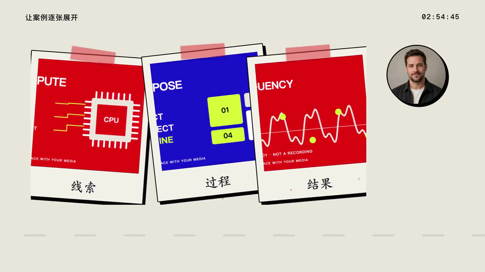已下载个人包 · 仅本机使用活力海报 · 口播讲解用高对比海报、大字、清单和图形关系配合口播，含原生动画与新增组件，横屏独立编排。1920 × 1080 · 60.0 fpszh · 30.3 MB · ccdac76053官网详情 查看 Demo选用并显示制作指令
已下载个人包 · 仅本机使用活力海报 · 口播讲解 · 竖屏用高对比海报、大字、清单和图形关系配合口播，含原生动画与新增组件，竖屏独立编排。1080 × 1920 · 60.0 fpszh · 30.3 MB · 1ec3379c29官网详情 查看 Demo选用并显示制作指令
暂无本地预览尚未下载或官网暂不可下载口播宣传动效 10 秒10 秒横版宣传动效：用一个数字、一句大字和品牌收尾，做短视频开场或产品预告片头。1920 × 1080 · 30.0 fps官网详情 查看 Demo
暂无本地预览尚未下载或官网暂不可下载DEEP STAGE 口播主舞台口播主舞台动效：9:16 人物画面（CAM 01 / REC 取景标签）与主信息屏、竖向章节导航屏三层错峰入位，下三分之一人名条滑入，镜头全程缓慢横移。14 秒，适合口播正文与知识讲解。1920 × 1080 · 30.0 fps官网详情 查看 Demo
暂无本地预览尚未下载或官网暂不可下载DEEP STAGE 深境舞台完整版46 秒整条口播包装视频模板：深色 3D 舞台开场点火 → 口播主舞台（人物画面 + 信息屏 + 章节屏）→ 产品讲解 → 案例数据 → 媒体素材墙 → 收尾锁版，一条连续镜头运动。可替换品牌、标题、人名职务、三屏文案、产品/案例文案、10 句口播字幕与主色；随包可选音效轨（纯合1920 × 1080 · 30.0 fps官网详情 查看 Demo
暂无本地预览尚未下载或官网暂不可下载Kit 2 · 口播动效包装（竖屏）给真人出镜的口播视频套上完整动效包装：人像窗口在全屏、圆窗、卡片之间插值过渡，配 10 个段落可视化隐喻与深色药丸双语字幕（重点词橙色）。高潮锚词砸下（震屏+橙闪），片尾手写收尾。1080×1920/30fps，样例 36.5 秒，含程序化动作音效。1080 × 1920 · 30.0 fps官网详情 查看 Demo
暂无本地预览尚未下载或官网暂不可下载桌面口播 · Mac 窗口动效浅色 macOS 桌面风格的真人口播模板：讲者出现在 Mac 摄像头窗口里，每句话按句型自动切换版式与动效——翻牌数字、弹出窗口、印章、荧光笔划重点、流程图、删除线、网格转场等，每种动效配有对应音效；判断句、数据句、风险句等各有专属布局。文字、数据、配色和节奏全部由参数驱动，替换1440 × 1080 · 30.0 fps官网详情 查看 Demo
暂无本地预览尚未下载或官网暂不可下载财经知识解说 · 50 页动效包风格的财经/知识解说动效包：16:9 横屏，50 种动画页面，按句子类型选页、参数驱动。含数字滚动、柱状/折线/占比图表、印章、新闻卡片、打字机金句、地图路线、关系网络、时间线、对比表格、白闪转场等，每页自带音效。示例数据均为虚构。1920 × 1080 · 30.0 fps官网详情 查看 Demo
暂无本地预览尚未下载或官网暂不可下载流程与时间线 · FLOW / TIMELINE四步创作流程（说戏→分镜→画面→成片）推进到一条时间线，四轨片段铺开、播放头扫过、统计落位；9.8 秒，适合 AIGC/创作工具的能力说明。1920 × 1080 · 30.0 fps官网详情 查看 Demo
暂无本地预览尚未下载或官网暂不可下载DEEP STAGE 案例数据案例讲解动效：数据仪表盘推入，3 个 KPI 数字滚动，6 根柱图从底部逐根生长（最高值自动主色高亮），前后对比副屏滑入。13 秒，适合案例复盘与成果汇报。1920 × 1080 · 30.0 fps官网详情 查看 Demo
暂无本地预览尚未下载或官网暂不可下载目标与证据 · 17类语义动效暖灰米白与绿色的17类语义动效，适用于知识讲解、产品说明、指标比较与观点表达。1280 × 720 · 24.0 fps官网详情 查看 Demo
暂无本地预览尚未下载或官网暂不可下载图解口播与图片展示月白渐变风格的图解与口播模板，支持图形讲解、图片视频展示和人物卡片；新增7种同系列食物SVG与透明PNG。1920 × 1080 · 24.0 fps官网详情 查看 Demo
暂无本地预览尚未下载或官网暂不可下载Kit 1 · 人文纪录片知识短片无口播、画面+字幕叙事的人文纪录片风知识短片模板：暗场开题、锚词砸出（缩放回弹+闪白+震屏）、结尾亮背景重定义。替换锚词与双语字幕即可制作新短片，1920×1080/30fps，样例 20 秒含程序化 BGM 与音效。1920 × 1080 · 30.0 fps官网详情 查看 Demo
暂无本地预览尚未下载或官网暂不可下载水墨人物志 · 一个人的故事用汉字当角色（韩、刘、萧、项…）的水墨动画，2 分 48 秒讲完一个历史人物的一生，并用心理学解释他为什么落到这个下场。改预设里的对白、成语签、地点年份、括注和场景即可换一个新人物。1920×1080 / 30fps，样例含程序化动作音效。1920 × 1080 · 30.0 fps官网详情 查看 Demo
暂无本地预览尚未下载或官网暂不可下载瑞士信息设计 · 知识讲解模板用清晰网格、对象计数和比例变化讲明白“百分比在除什么”。适合分母、权重与统计比较，可由AI助手按本期文稿选择图示，支持可选真人开场。1920 × 1080 · 60.0 fps官网详情 查看 Demo
暂无本地预览尚未下载或官网暂不可下载黏土实验台 · 知识讲解模板把拆分、附着和搬运变成可追踪的黏土实验。适合对象变化与过程解释，由AI助手选择图标和图示，可选真人全屏开头后缩成圆窗。1920 × 1080 · 60.0 fps官网详情 查看 Demo
暂无本地预览尚未下载或官网暂不可下载粉笔黑板 · 知识讲解模板用粉笔线条把光线、视角与遮挡条件逐步画清。适合轨道、投影和几何原因辨析，提供图标图示选择引导，可选真人开场后圆窗陪讲。1920 × 1080 · 60.0 fps官网详情 查看 Demo
暂无本地预览尚未下载或官网暂不可下载生长导图 · 知识讲解模板让关系沿分支生长，让对象沿路径前进。适合层级、分流、局部放大与不同时间尺度的解释，配有图示选择引导，可选真人开场后缩圆窗。1920 × 1080 · 60.0 fps官网详情 查看 Demo
暂无本地预览尚未下载或官网暂不可下载博物馆展墙 · 知识讲解模板以展墙与展品机制串起一段知识历程。适合日影、液位、齿轮、摆动、分频与共振的解释，由AI助手选图示，可选真人开场后圆窗陪讲。1920 × 1080 · 60.0 fps官网详情 查看 Demo
暂无本地预览尚未下载或官网暂不可下载发光玻璃板 · 知识讲解模板在发光线条中看见波形怎样相遇、延时怎样留下残余。适合信号叠加、相位与反馈解释，提供图标图示引导，可选真人开头后缩圆窗。1920 × 1080 · 60.0 fps官网详情 查看 Demo
暂无本地预览尚未下载或官网暂不可下载等距系统图 · 知识讲解模板用等距剖切把内部结构、物质通路与能量关系分开讲清。适合换热、压缩和能量核算，提供图示选择引导，可选真人开场后缩圆窗。1920 × 1080 · 60.0 fps官网详情 查看 Demo
暂无本地预览尚未下载或官网暂不可下载纸雕层叠 · 知识讲解模板用层叠纸片看见内部、压缩与搬运。适合层序、褶皱、切面和错动的教学解释，提供图标图示选择引导，可选真人开场后缩成圆窗。1920 × 1080 · 60.0 fps官网详情 查看 Demo
暂无本地预览尚未下载或官网暂不可下载地铁线路图 · 知识讲解模板沿着线路追踪占用、停车与队列变化。适合安全间隔、状态读数和有限服务流程的教学表达，配有图标图示引导，可选真人开头后缩圆窗。1920 × 1080 · 60.0 fps官网详情 查看 Demo
暂无本地预览尚未下载或官网暂不可下载双色孔版 · 知识讲解模板用双色套印看清复制、增长和基数差异。适合固定增量与固定比例、谱系和指数规则的解释，提供图示选择引导，可选真人开场后圆窗陪讲。1920 × 1080 · 60.0 fps官网详情 查看 Demo
暂无本地预览尚未下载或官网暂不可下载点阵手账 · 知识讲解模板把步骤、关键词和修订留在同一本点阵手账里。适合方法拆解与学习回顾，提供图标图示选择引导；页面为19.95秒早期风格短样。1920 × 1080 · 60.0 fps官网详情 查看 Demo
暂无本地预览尚未下载或官网暂不可下载彩色几何 · 知识讲解模板用彩色边、面积与刚体拼图讲清几何等量关系。原生新稿围绕直角三角形模型，提供图示选择引导；页面为23.8667秒早期风格短样。1920 × 1080 · 60.0 fps官网详情 查看 Demo
暂无本地预览尚未下载或官网暂不可下载决策数据剧场 · Decision Chart Theater黑底数据讲解剧场：台账 → 矢量图表逐元素长出并推近讲解 → 一个大数字结论 → 光圈收黑。六种镜头由参数驱动，时长随内容。这支 Demo 就是本模板渲染的（97.6 秒 / 30fps），示例数字已匿名化。1920 × 1080 · 30.0 fps官网详情 查看 Demo
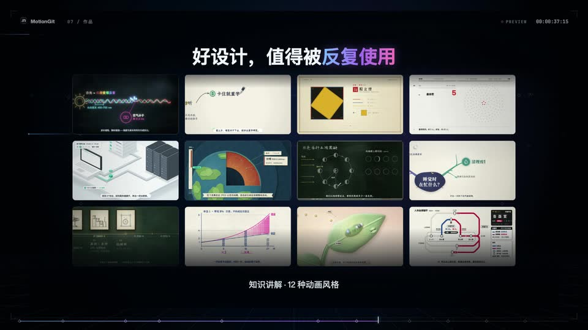已下载个人包 · 仅本机使用多屏拼贴 · 品牌宣传用多屏拼贴、版面切换和品牌收尾展示产品与创作流程，适合品牌介绍和工具宣传。1920 × 1080 · 60.0 fpszh · 5.4 MB · 4b8db1c83a官网详情 查看 Demo选用并显示制作指令
已下载个人包 · 仅本机使用像素闯关 · 产品宣传像素城市、角色闯关和复古游戏音色组成产品介绍，适合数字工具与功能说明。1920 × 1080 · 60.0 fpszh · 3.9 MB · 8bbe087e91官网详情 查看 Demo选用并显示制作指令
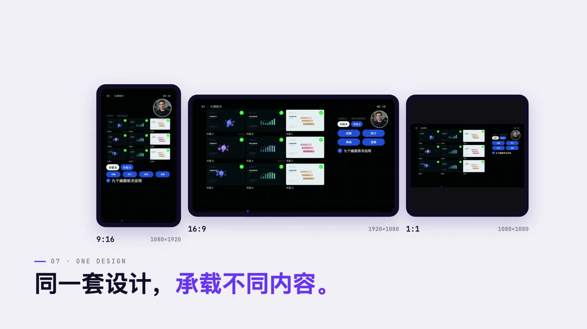已下载个人包 · 仅本机使用明暗快切 · 产品宣传明暗画面快速切换，结合大字和界面展示突出产品功能，适合节奏鲜明的宣传片。1920 × 1080 · 60.0 fpszh · 4.2 MB · e989b214e7官网详情 查看 Demo选用并显示制作指令
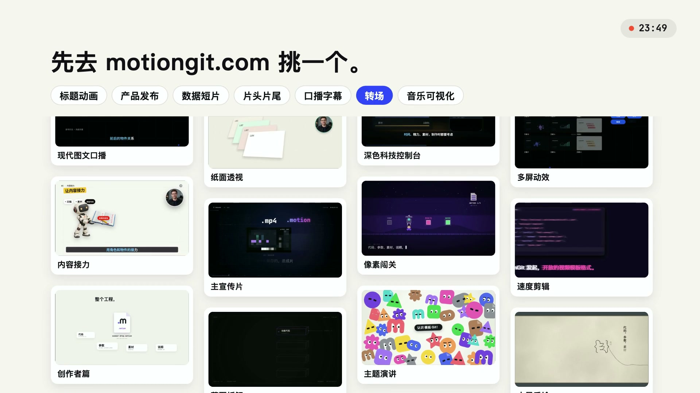已下载个人包 · 仅本机使用流程演示 · 产品教程沿着选择模板、提供内容、生成视频的流程讲解产品使用，适合工具教程和上手演示。1920 × 1080 · 60.0 fpszh · 3.8 MB · 07f5fd6445官网详情 查看 Demo选用并显示制作指令
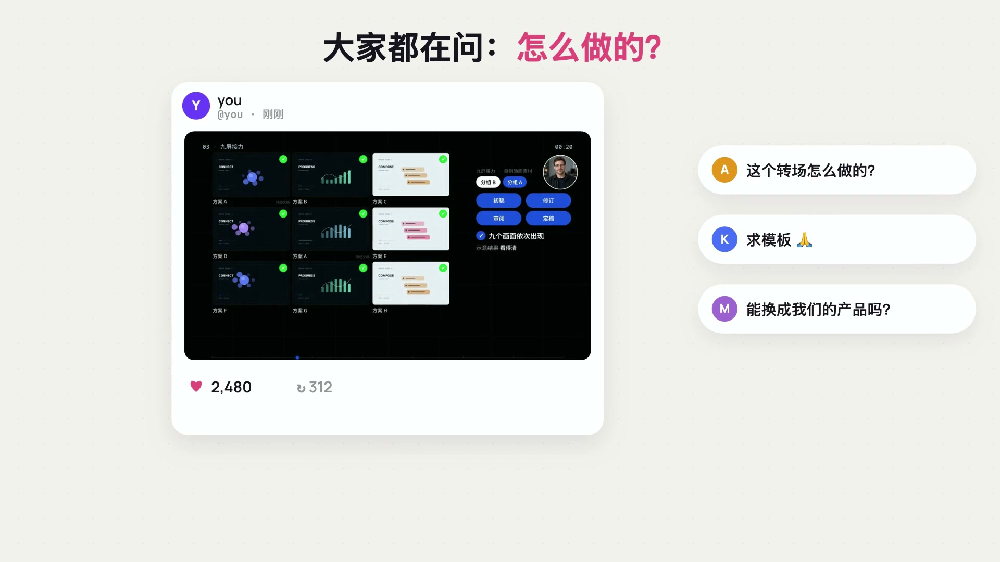已下载个人包 · 仅本机使用模块拼贴 · 创作者宣传以模块拼贴呈现内容、素材和动画的组合关系，适合创作者工具与工作方式介绍。1920 × 1080 · 60.0 fpszh · 3.8 MB · 747b086e61官网详情 查看 Demo选用并显示制作指令
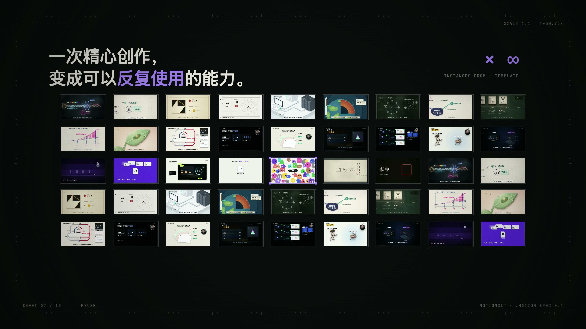已下载个人包 · 仅本机使用工程蓝图 · 产品拆解以工程蓝图、结构示意和模块拆解展示产品组成，适合技术产品与工作流讲解。1920 × 1080 · 60.0 fpszh · 2.0 MB · 342511ce17官网详情 查看 Demo选用并显示制作指令
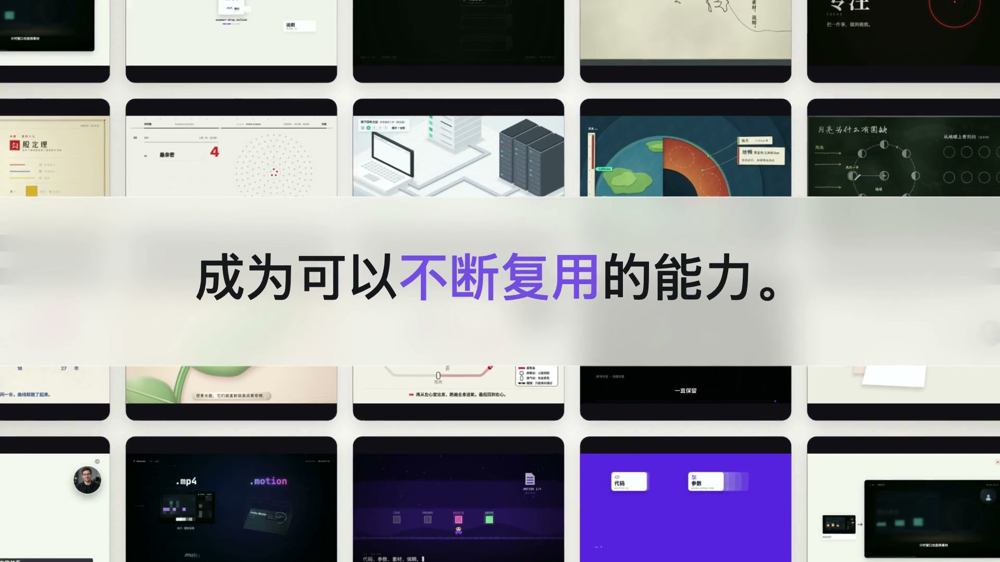已下载个人包 · 仅本机使用发布会舞台 · 产品演示以发布会舞台和大屏展示组织产品演示，适合新品介绍、功能发布与品牌展示。1920 × 1080 · 60.0 fpszh · 11.9 MB · 3209731009官网详情 查看 Demo选用并显示制作指令
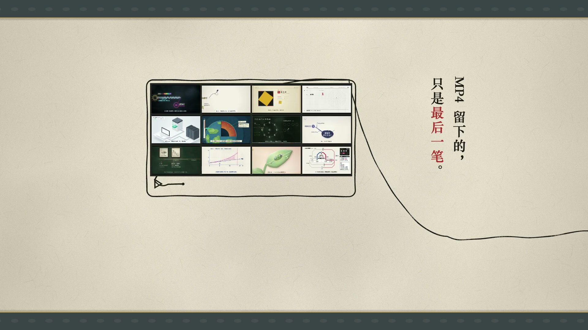已下载个人包 · 仅本机使用宣纸手卷 · 品牌叙事沿宣纸手卷展开品牌故事，以水墨意象和卷轴转场营造东方叙事。1920 × 1080 · 60.0 fpszh · 16.7 MB · d4b01423d5官网详情 查看 Demo选用并显示制作指令
暂无本地预览尚未下载或官网暂不可下载拼贴出场 · COLLAGE OPEN8.5 秒拼贴出场：9 块创作样张依次飞入拼贴墙，主张版块落位。可换品牌名、片头编号、强调色与两行标题。1920 × 1080 · 30.0 fps官网详情 查看 Demo
暂无本地预览尚未下载或官网暂不可下载多屏墙换版 · WALL SWAP从面板擦除进入多屏拼贴墙，再切到「一个想法，四种看法」的分屏版面；8.6 秒展示多素材并置与版面切换。可换品牌名、片头编号、强调色与两行标题。1920 × 1080 · 30.0 fps官网详情 查看 Demo
暂无本地预览尚未下载或官网暂不可下载四种看法与片格 · VIEWS / STRIP「一个想法，四种看法」分屏版面切到横滚片格，真实晚霞树影与创作样张横向滚动；8.2 秒，适合多镜头并置与作品条带展示。1920 × 1080 · 30.0 fps官网详情 查看 Demo
暂无本地预览尚未下载或官网暂不可下载产品与品牌 · PRODUCT → BRAND从面板擦除进入产品工作台（分镜/画布/调色/时间线同窗联动），再以墨色擦除收进棱镜标志、字标、主张与 CTA；14.4 秒，适合产品演示与品牌落版。1920 × 1080 · 30.0 fps官网详情 查看 Demo
暂无本地预览尚未下载或官网暂不可下载DEEP STAGE 产品讲解产品讲解动效：产品主屏推入并持续推近，3 个参数切片从 3D 空间错峰浮出、数字从 0 滚到终值，右下角人物小画中画入位。12 秒，适合产品卖点与参数讲解。1920 × 1080 · 30.0 fps官网详情 查看 Demo
暂无本地预览尚未下载或官网暂不可下载双语科技歌词动效 MV固定约194秒的双语科技歌词MV模板，包含逐字歌词、多画面拼接、科技标题和声音频谱动效。Windows、Python与FFmpeg运行；使用者须自备音频、双语歌词和41段不同视频。1280 × 720 · 30.0 fps官网详情 查看 Demo
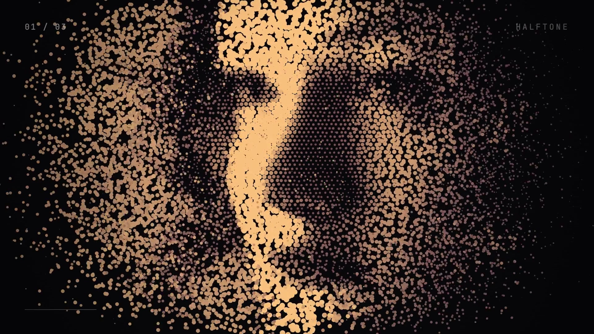已下载个人包 · 仅本机使用半调网点 · 人像标题三张人像化为流动的双色网点，散开后重新汇聚成标题，适合人像与主题开场。1920 × 1080 · 60.0 fpszh · 23.9 MB · 67c485bf45官网详情 查看 Demo选用并显示制作指令
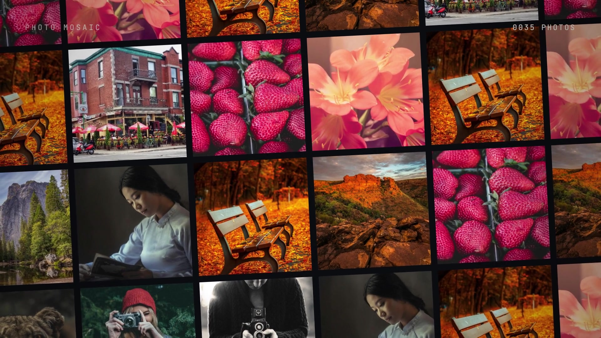已下载个人包 · 仅本机使用照片马赛克 · 拼图揭幕多张照片组成主视觉，从局部照片拉远揭示完整马赛克，适合集体回忆与拼图揭幕。1920 × 1080 · 60.0 fpszh · 24.4 MB · 34edc393d4官网详情 查看 Demo选用并显示制作指令
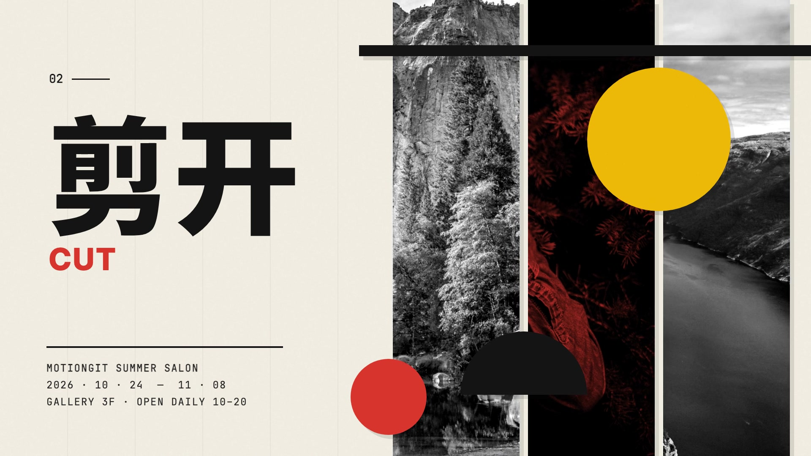已下载个人包 · 仅本机使用几何拼贴 · 动态海报将四张照片裁成几何形状，在三组包豪斯动态海报中重组，适合活动与视觉主题展示。1920 × 1080 · 60.0 fpszh · 19.5 MB · 48656a258b官网详情 查看 Demo选用并显示制作指令
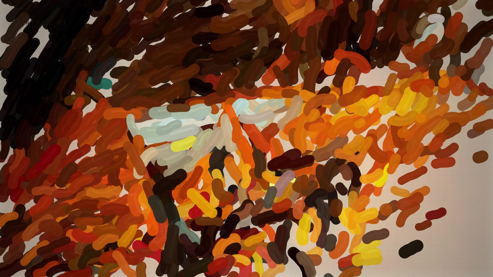已下载个人包 · 仅本机使用笔触重绘 · 艺术照片用三层定向笔触重绘照片，与原图对照后呈现署名标题，适合摄影与艺术展示。1920 × 1080 · 60.0 fpszh · 24.2 MB · aa881056b4官网详情 查看 Demo选用并显示制作指令
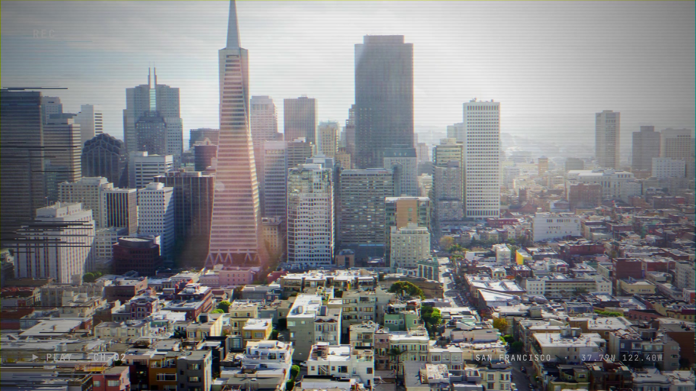已下载个人包 · 仅本机使用信号故障 · 照片转场用像素排序、RGB 分离和扫描线改造照片，并以 CRT 关机效果收尾，适合科技视觉片段。1920 × 1080 · 60.0 fpszh · 19.7 MB · 79536af820官网详情 查看 Demo选用并显示制作指令
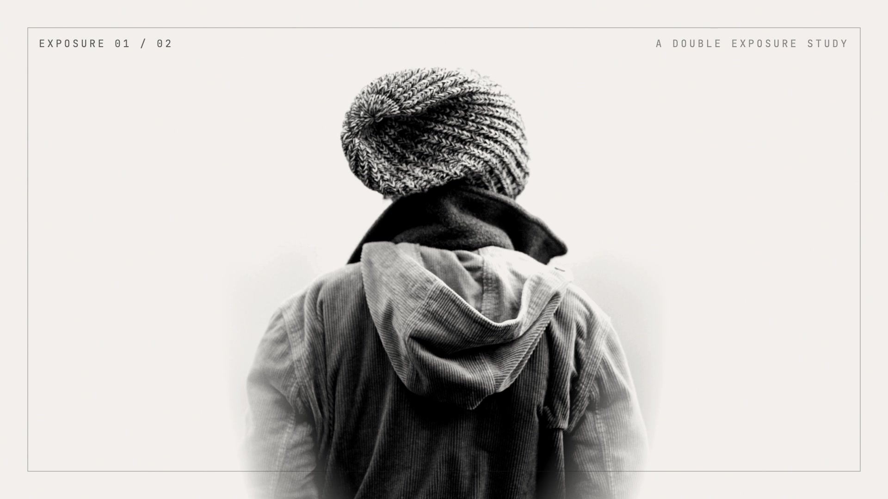已下载个人包 · 仅本机使用双重曝光 · 人像叠影以风景填充人像剪影，双层画面反向漂移，标题从薄雾显现，适合诗意人像叠影。1920 × 1080 · 60.0 fpszh · 23.6 MB · d7e9320c55官网详情 查看 Demo选用并显示制作指令
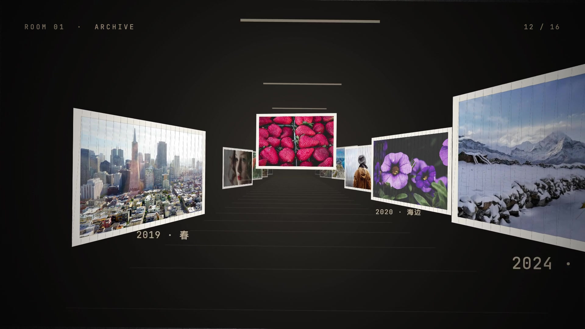已下载个人包 · 仅本机使用空间画廊 · 回忆相册穿行带有文字说明的立体照片画廊，最后推进主照片并揭示全屏标题，适合回忆与作品集。1920 × 1080 · 60.0 fpszh · 24.3 MB · 530b10e395官网详情 查看 Demo选用并显示制作指令
已下载个人包 · 仅本机使用镜像万花筒 · 照片变幻将两张照片镜像成旋转的十二分段万花筒，经扩张圆环转场再展开原图，适合视觉主题片。1920 × 1080 · 60.0 fpszh · 23.9 MB · afc0e0f1c0官网详情 查看 Demo选用并显示制作指令
暂无本地预览尚未下载或官网暂不可下载Light Ribbon Word光之丝带汇聚成一个词：丝带流动、粒子成字、光带扫过，再散回丝带。1920 × 1080 · 30.0 fps官网详情 查看 Demo
暂无本地预览尚未下载或官网暂不可下载面板擦除 · WIPE PACK四套面板擦除过场：竖条合拢、横条下压、纸色竖条、墨色竖条；8 秒转场包，可用于场景切换与章节过渡。1920 × 1080 · 30.0 fps官网详情 查看 Demo
暂无本地预览尚未下载或官网暂不可下载DEEP STAGE 开场点火标题深色立体舞台开场：地平线点火、地面透视网格生长、远景屏幕墙点亮，两段主标题落下（金属渐变），最后落到副标题与角标。10 秒片头动效，可换品牌、标题、副标题与主色。1920 × 1080 · 30.0 fps官网详情 查看 Demo
暂无本地预览尚未下载或官网暂不可下载DEEP STAGE 媒体素材墙媒体素材墙动效：六宫格（2×3）在 3D 空间逐张落位，每格独立纵深与旋转，落位后极缓慢浮动，镜头持续后拉。10 秒，适合素材盘点与 B-roll 讲解。1920 × 1080 · 30.0 fps官网详情 查看 Demo
暂无本地预览尚未下载或官网暂不可下载DEEP STAGE 收尾锁版收尾锁版动效：屏幕退向纵深，logo 描边锁定，字标、副标、规格行与版本胶囊依次落位，一道横扫光掠过，结尾稳定呼吸。8 秒，适合片尾与版本标识。1920 × 1080 · 30.0 fps官网详情 查看 Demo
暂无本地预览尚未下载或官网暂不可下载3D 吉祥物手把手教程把网页或 App 的一段操作流程（注册、下单、设置等），做成 3D 小宠物带着一步步点、打字、指重点的横屏教程视频1920 × 1080 · 30.0 fps官网详情 查看 Demo
暂无本地预览尚未下载或官网暂不可下载可爱角色歌词 MV33 秒横屏歌词 MV 完整模板（1920×1080，30fps），可替换歌词、关键词大字与手写纸条。模板默认采用程序绘制的可爱 chibi 角色。中文 Demo 使用此前完成的《碎碎念》完整成片，未重新渲染；Demo 人物沿用原片风格，与模板默认角色风格不同。音频署名：小天；抖1920 × 1080 · 30.0 fps官网详情 查看 Demo
暂无本地预览尚未下载或官网暂不可下载光的语法六镜光学短片模板。冷白光谱底、七条色带像频谱仪一样呼吸、透镜光斑推移，适合讲光学、色彩与感知类知识。固定 14 秒，1920x1080。1920 × 1080 · 30.0 fps官网详情 查看 Demo
暂无本地预览尚未下载或官网暂不可下载深海时钟七镜深海观察日志：光在 200 米处终止、每 10 米增加一个大气压、声音传得更远。冷蓝到近黑的单色系统，适合讲深海、压强与感知边界。固定 16.7 秒，1920x1080。1920 × 1080 · 30.0 fps官网详情 查看 Demo
暂无本地预览尚未下载或官网暂不可下载城市脉搏六镜城市夜行：天际线切片、楼体呼吸、交通流与人口曲线。暖橙高对比的城市节奏，适合讲城市、人群与流动。固定 11.3 秒，1920x1080。1920 × 1080 · 30.0 fps官网详情 查看 Demo
暂无本地预览尚未下载或官网暂不可下载种子库五镜标本档案：恒温舱呼吸单元格、编号标本格、光照周期与异地备份。冷色极简的档案秩序，适合讲保存、备份与长期主义。固定 16 秒，1920x1080。1920 × 1080 · 30.0 fps官网详情 查看 Demo
暂无本地预览尚未下载或官网暂不可下载火星农场六镜等距种植图：火星表土、脉动生长格、水循环与收成预估。锈红与青绿的互补配色，适合讲太空农业与资源闭环。固定 14.2 秒，1920x1080。1920 × 1080 · 30.0 fps官网详情 查看 Demo
暂无本地预览尚未下载或官网暂不可下载AI 能不能代替人工七镜论证体短片：先提问，再讲 AI 能做什么、不能做什么、机制怎么拆、边界在哪里，最后给出结论与落版。冷灰底配橙红强调，适合讲 AI 与人的分工。固定 29.5 秒，1920x1080。1920 × 1080 · 30.0 fps官网详情 查看 Demo
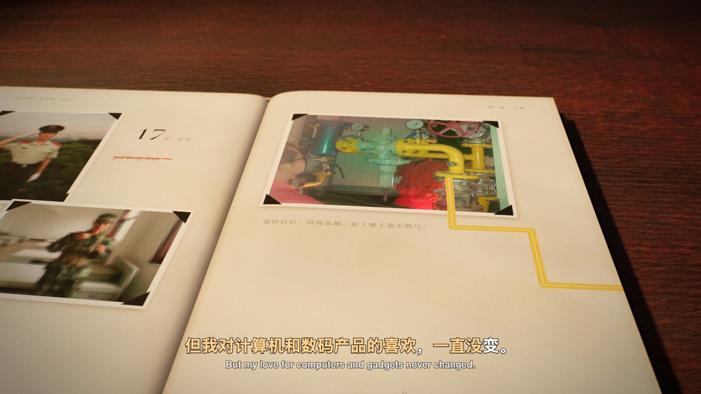尚未开放下载3D书 · 阿杜和那个影响了以立体书页、真实照片、翻页镜头和双语字幕串联个人经历，展示可用于回忆与叙事讲解的书本舞台。Demo 使用第8版完整成片。1920 × 1080 · 60.0 fps 查看 Demo
暂无本地预览尚未下载或官网暂不可下载房产 · 一镜看房户型 · 采光 · 通勤 · 价格 四张图 主播站在户型图的客厅里，镜头拉出，整张户型图逐笔画出；之后一条连续镜头推门、进厨房、穿进每个房间实拍，再看采光剖面、通勤等时圈、挂牌价走势与议价空间。1080 × 1920 · 60.0 fps官网详情 查看 Demo
暂无本地预览尚未下载或官网暂不可下载财经 · 三笔账收益 · 回撤 · 时间 一条行情线跑进画面、沿主播窗口描边；十年定投曲线跟着口播数字生长：收益账、回撤账（1000 种行情模拟扇形图）、时间账。1080 × 1920 · 60.0 fps官网详情 查看 Demo
暂无本地预览尚未下载或官网暂不可下载法律 · 讨薪三步攒证据 · 选途径 · 盯时效 以案卷照片、红章和法条划线为视觉线索，结合聊天证据、流程时间线和申请书分栏，演示普法口播的组织方式。涉及的法条与时限仍待核对，不作为法律结论。1080 × 1920 · 60.0 fps官网详情 查看 Demo
暂无本地预览尚未下载或官网暂不可下载医疗健康 · 看懂化验单数值 · 风险 · 日常 由化验单扫描线切入主播画面，再用刻度、趋势图与饮食分区演示健康科普的可视化结构。尿酸参考范围及相关医学说法仍待核对，不作为诊断标准。1080 × 1920 · 60.0 fps官网详情 查看 Demo
暂无本地预览尚未下载或官网暂不可下载教育 · 三种解法假设法 · 抬脚法 · 列方程 主播是笼子里的一个头，35 个头、94 只脚依次落下，红色问号收束；三种解法写在同一张方格草稿纸上，镜头跟着笔走，最后拉远对比。1080 × 1920 · 60.0 fps官网详情 查看 Demo
暂无本地预览尚未下载或官网暂不可下载电商带货 · 实测四项保温 · 密封 · 材质 · 价格 条形码拉开画面，价签引出主播；通过保温曲线、密封展示、材质细节与价格走势，演示实测类带货内容的表达结构。画面与数据均为示意，不代表已完成真实商品实测。1080 × 1920 · 60.0 fps官网详情 查看 Demo
暂无本地预览尚未下载或官网暂不可下载美妆护肤 · 成分表成分表 · 浓度 · 怎么用 由成分表关键词切入主播画面，用排序、浓度刻度、皮肤屏障和使用时间表演示护肤讲解结构。烟酰胺及相关功效、浓度说法仍待核对，不作为确定结论。1080 × 1920 · 60.0 fps官网详情 查看 Demo
暂无本地预览尚未下载或官网暂不可下载美食探店 · 值不值得排排队 · 价格 · 味道 · 环境 自拍镜头开场，取号单打印、计时飞到 60 分钟后被撕开；顶部四项计分板逐章填满：排队计时环、账单占比、菜品特写、环境噪音。1080 × 1920 · 60.0 fps官网详情 查看 Demo
暂无本地预览尚未下载或官网暂不可下载汽车 · 四笔账能源 · 保养 · 保险 · 残值 主播是仪表盘中心，指针扫过、里程滚到 20000 km，表盘一分为二（油/电）；顶部总账随每一笔实时重算，家充/快充一键切换。1080 × 1920 · 60.0 fps官网详情 查看 Demo
暂无本地预览尚未下载或官网暂不可下载数码科技 · 换不换性能 · 电池 · 系统 · 算账 锁屏上主播就是面容解锁画面，解锁后电池健康 78% 钉在角上；之后像真的在点「设置」一样逐页检查：屏幕使用时间、电池、系统更新、存储。1080 × 1920 · 60.0 fps官网详情 查看 Demo
暂无本地预览尚未下载或官网暂不可下载职场 · 三行汇报为什么听不懂 · 一个结构 · 三个场景 九宫格视频会议，其他人逐个关掉只剩主播，弹出「老板：所以重点是？」；一句结论 · 三个原因 · 一个请求逐字搭建，周报改前改后对比。1080 × 1920 · 60.0 fps官网详情 查看 Demo
暂无本地预览尚未下载或官网暂不可下载情感 · 对话复盘看数据 · 辨信号 · 学会问 聊天界面里回复越来越慢（2 分钟 → 47 分钟 → 3 小时），头像打开成主播画面；回复时长统计、信号天平、三个红灯、换个说法。1080 × 1920 · 60.0 fps官网详情 查看 Demo